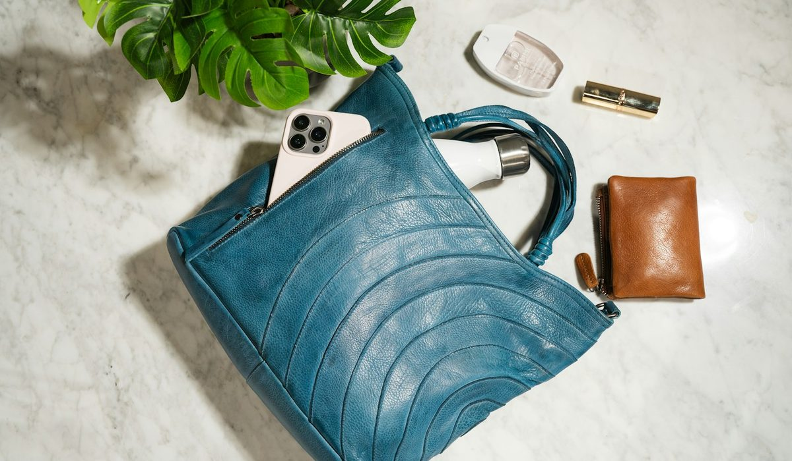
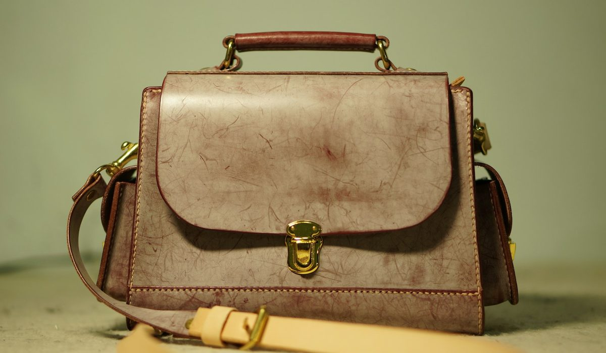

En bref
Le meilleur cabas en cuir pour femme est le Cabas M zippé en cuir de Vanessa Bruno, noté 8,7/10 (relevé de démonstration), à 365 € en cuir de vachette fabriqué en Italie. Il l'emporte sur la polyvalence et sur la gamme, du S au XL, en lisse, en nubuck à sequins ou en matelassé. Longchamp suit à 8,3/10 avec son Pliage Xtra en cuir à 360 €, et Polène complète le podium à 8,1/10 avec le Cyme, le plus beau cuir du panel.
- Les 9 cabas comparés coûtent de 289 € (Lancaster Ida Double) à 680 € (Le Tanneur Hortense grand modèle)
- Le Cabas M zippé en cuir de Vanessa Bruno coûte 365 €, sa version nubuck à sequins 345 € et le matelassé XL 550 €
- Polène gagne le critère Cuir et finitions d'un dixième, 9,0 contre 8,9
- Deux modèles seulement affichent un lieu de fabrication, l'Italie pour Vanessa Bruno et la France pour l'Hortense de Le Tanneur
Sommaire de ce comparatif
Nos critères et leur poids
365 €, 440 €, 680 €. Entre trois cabas en cuir de taille comparable, l'écart de prix dépasse 300 €, et il ne dit presque rien de ce que vous porterez dans cinq ans. Nous avons donc noté les neuf modèles sur cinq critères, avec un poids plus lourd sur le cuir lui-même.
| Critère | Poids | Ce que nous regardons |
|---|---|---|
| Cuir et finitions | 30 % | Le type de cuir, le grain, les coutures, la tranche des anses, la doublure |
| Polyvalence | 20 % | Le passage du bureau au week-end, la fermeture, le portage main et épaule |
| Prix | 20 % | Le prix catalogue de la taille M ou de son équivalent |
| Gamme de tailles et versions | 15 % | Le nombre de tailles et de finitions disponibles pour un même modèle |
| Confort et poids | 15 % | Le poids à vide, la hauteur des anses, la tenue sur l'épaule une fois chargé |
Total 100 %. La note globale est la moyenne pondérée des sous-notes, arrondie au dixième.
Le cuir compte pour 30 %. Les deux critères suivants, polyvalence et prix, pèsent autant l'un que l'autre. Un cabas en cuir coûte cher, il doit donc servir souvent.
Le classement des 9 meilleurs cabas en cuir
Quatre dixièmes séparent la première et la deuxième place. Ils se gagnent sur la gamme et sur la polyvalence. Sur le cuir pur, le Cyme de Polène passe devant.
01 Le plus polyvalentCabas M zippé en cuir à 365 €8,7/10
Le plus polyvalentCabas M zippé en cuir à 365 €8,7/10
Le plus polyvalentCabas M zippé en cuir à 365 €8,7/1002 Le Pliage en cuirPliage Xtra M à 360 €8,3/10
Le Pliage en cuirPliage Xtra M à 360 €8,3/10
Le Pliage en cuirPliage Xtra M à 360 €8,3/1003 Le plus beau cuirCyme en cuir grainé à 440 €8,1/10
Le plus beau cuirCyme en cuir grainé à 440 €8,1/10
Le plus beau cuirCyme en cuir grainé à 440 €8,1/10Le Cabas M zippé de Vanessa Bruno prend la tête parce qu'il reprend une forme pensée pour tout porter, avec un cuir de vachette fabriqué en Italie et une famille qui va du S au XL. Longchamp transpose son Pliage en cuir de vachette dans la gamme Xtra, à 320 € en S, 360 € en M et 590 € en L. Polène signe le cuir grainé le plus régulier du panel, à 440 € pour le Cyme.
| Modèle | Cuir et finitions (30 %) | Polyvalence (20 %) | Prix (20 %) | Gamme (15 %) | Confort (15 %) | Note |
|---|---|---|---|---|---|---|
| Vanessa Bruno, Cabas M zippé | 8,9 | 9,2 | 8,0 | 9,6 | 7,8 | 8,7 |
| Longchamp, Pliage Xtra | 8,4 | 8,4 | 8,0 | 8,4 | 8,4 | 8,3 |
| Polène, Cyme | 9,0 | 7,6 | 7,4 | 7,6 | 8,2 | 8,1 |
| Sézane, cabas en cuir | 8,0 | 7,8 | 8,0 | 7,6 | 8,0 | 7,9 |
| Lancaster, Ida Double | 6,8 | 6,8 | 8,6 | 6,4 | 6,4 | 7,0 |
Vanessa Bruno perd le critère Cuir et finitions face à Polène et le critère Prix face à Lancaster.
Le tableau comparatif des 9 cabas en cuir
Chaque ligne donne le modèle en taille M, ou dans son seul format quand la marque n'en propose qu'un. Le lieu de fabrication est celui que la fiche produit affiche, sans extrapolation.
| Marque et modèle | Note /10 | Prix | Cuir | Fabrication annoncée | Le point fort |
|---|---|---|---|---|---|
| Vanessa Bruno, Cabas M zippé en cuirNotre choix | 8,7 | 365 € | Vachette, nubuck à sequins, matelassé | Italie | La polyvalence et la gamme |
| Longchamp, Le Pliage Xtra porté épaule M | 8,3 | 360 € | Cuir de vachette | Non affichée | Le Pliage en version cuir |
| Polène, Cyme | 8,1 | 440 € | Cuir grainé | Non affichée, artisans d'Ubrique mis en avant | Le grain du cuir |
| Sézane, cabas en cuir | 7,9 | Autour de 345 € | Cuir | Non affichée | Le style parisien |
| A.P.C., Sac Neige | 7,6 | 450 € à 490 € | Une seule pièce de cuir | Non affichée | La coupe d'une seule pièce |
| Le Tanneur, Hortense grand modèle | 7,3 | 680 € | Cuir grainé italien double face | France | La fabrication française |
| Gérard Darel, 24H en cuir | 7,2 | 365 € | Cuir | Non affichée | Le grand sac de bureau |
| Lancaster, Ida Double | 7,0 | 289 € | Cuir de vachette grainé | Non affichée | Le prix le plus bas |
| Maje, Milpli Cabas | 6,9 | 395 € | Cuir craquelé | Non affichée | Le cuir craquelé |
Prix catalogue en euros TTC relevés sur les sites officiels, taille M ou équivalente, hors ventes Archives. Le prix de Sézane est indicatif, la collection change à chaque saison. Notes et prix, relevé de démonstration du 14 octobre 2026.
Une colonne surprend. Sur neuf modèles, sept n'indiquent pas où le sac est fabriqué. Vanessa Bruno annonce l'Italie pour ses cabas en cuir de vachette, Le Tanneur la France pour l'Hortense, assemblée à partir d'un cuir grainé italien. Polène met en avant les artisans d'Ubrique, en Espagne, sans l'écrire sur la fiche du Cyme.

Vachette, grainé, nubuck, ce que vaut chaque cuir
Le cuir grainé pardonne. Il cache les rayures du quotidien et garde sa forme quand le sac est vide, ce qui explique sa place chez Polène, Le Tanneur et Lancaster. Le Cyme en tire un toucher régulier et des coutures nettes. C'est le meilleur cuir de ce comparatif, d'un dixième.
Le cuir de vachette joue une autre carte, celle de la souplesse. Le Cabas M zippé de Vanessa Bruno se décline en vachette de 345 € à 365 €, en nubuck à finitions sequins à 345 €, et en cuir matelassé de 395 € en S à 550 € en XL. Trois finitions sur une même silhouette. Seul Maje en propose autant sur le Milpli, en cuir craquelé, en suède et en toile et cuir, mais dans un seul format.
On achète un cabas en cuir pour le cuir. On le garde pour la forme, parce qu'elle va avec tout.
Les autres cuirs ont leurs partisans. Le Sac Neige d'A.P.C. est cousu dans une seule pièce de cuir, ce qui limite les coutures et donne une ligne très pure. Le Milpli Cabas de Maje mise sur un cuir craquelé à 395 €, avec une version en suède au même prix. Le Tanneur pousse le travail plus loin avec un cuir grainé double face, réversible, sur l'Hortense. Et Longchamp reprend dans le Pliage Xtra la silhouette de son Pliage en nylon, cette fois en cuir de vachette souple.
Prix et tailles, où se situe chaque modèle
Lancaster reste le cuir le plus accessible, avec l'Ida Double à 289 € et 315 € en très grand format. La Mademoiselle Grace, en vachette pleine fleur, coûte 310 €. Sur le critère Prix, Lancaster gagne, et le Pliage Xtra de Longchamp passe 5 € sous le Cabas M zippé.
Au milieu, le 24H de Gérard Darel en cuir et le Cabas M zippé se retrouvent à 365 €. Au-dessus, Polène s'échelonne de 350 € pour le Nano à 460 € pour le Cyme Tote, au format ordinateur. Le haut du panel appartient à Le Tanneur, 650 € pour l'Hortense moyen modèle et 680 € pour le grand, et à Longchamp avec Le Roseau, 690 € en sac porté épaule M.

La gamme de tailles départage les deux premiers. Le cabas en cuir de Vanessa Bruno va de 295 € en S à 395 € en L en vachette, et jusqu'au XL en matelassé. Le Pliage Xtra couvre le S, le M et le L. Polène propose quatre formats du Cyme, du Nano au Tote.
Quel cabas en cuir choisir selon votre profil
Si vous voulez un seul cabas en cuir pour tout faire
Prenez le Cabas M zippé en cuir de Vanessa Bruno, à 365 €. La fermeture protège le contenu, la forme passe du bureau au dîner, et la version nubuck à sequins change l'allure sans changer de format.
Si le cuir prime sur tout le reste
Prenez le Cyme de Polène à 440 €, ou le Cyme Tote à 460 € si vous portez un ordinateur. C'est le cuir grainé le plus abouti de ce comparatif.
Si vous aimez déjà la ligne du Pliage
Prenez le Pliage Xtra de Longchamp en M, à 360 €. Vous gardez la forme trapèze et le rabat qui ont fait le succès du modèle en nylon, avec un cuir qui vieillit bien. Le S à 320 € suffit pour une journée sans ordinateur.
Si votre budget plafonne à 300 €
Prenez l'Ida Double de Lancaster à 289 €. Le cuir de vachette grainé tient bien l'usage quotidien, avec une gamme de tailles plus courte.
Si vous voulez un cuir travaillé en France
Prenez l'Hortense de Le Tanneur, fabriquée en France à partir d'un cuir grainé italien double face, à 650 € en moyen modèle. C'est le prix d'entrée le plus élevé du panel, pour un sac fait pour durer.
Notre verdict
Le meilleur cabas en cuir pour femme est le Cabas M zippé en cuir de Vanessa Bruno, avec 8,7/10. Il gagne sur la polyvalence et sur la gamme, trois finitions et des tailles du S au XL, et cède d'un dixième le critère du cuir au Cyme de Polène, 8,1/10. Le Pliage Xtra de Longchamp prend la deuxième place, à 8,3/10.
Si votre priorité est le grain du cuir, prenez le Cyme de Polène. Si votre priorité est le prix, prenez l'Ida Double de Lancaster. Si vous voulez un cabas en cuir qui suit toute la semaine, prenez le Cabas M zippé.
Questions fréquentes
Quel est le meilleur cabas en cuir pour femme ?
Le Cabas M zippé en cuir de Vanessa Bruno arrive premier de notre comparatif avec 8,7/10, à 365 € en cuir de vachette fabriqué en Italie. Le Pliage Xtra de Longchamp suit avec 8,3/10 et le Cyme de Polène avec 8,1/10.
Est-ce que Longchamp fait un Pliage en cuir ?
Oui, sous le nom Le Pliage Xtra, en cuir de vachette. Le sac porté épaule coûte 320 € en S, 360 € en M et 590 € en L. Le Roseau, l'autre ligne en cuir de Longchamp, coûte 690 € en M.
Quel cabas en cuir est le moins cher parmi les marques françaises ?
L'Ida Double de Lancaster est le moins cher de notre comparatif, à 289 € en cuir de vachette grainé. Le Pliage Xtra de Longchamp coûte 360 € en M et le Cabas M zippé en cuir de Vanessa Bruno 365 €.
Où sont fabriqués les cabas en cuir des marques françaises ?
Peu de fiches le disent. Vanessa Bruno annonce l'Italie pour ses cabas en cuir de vachette et Le Tanneur la France pour l'Hortense, assemblée avec un cuir grainé italien. Polène met en avant les artisans d'Ubrique, en Espagne.
Est-ce qu'un cabas en cuir grainé est plus résistant qu'un cuir lisse ?
Le cuir grainé cache mieux les rayures et garde sa forme, c'est pourquoi Polène, Le Tanneur et Lancaster l'utilisent sur leurs cabas. Le cuir lisse se patine avec le temps et demande un peu plus de soin, une crème nourrissante deux fois par an suffit.
Comment sont notés les modèles ?
Chaque modèle est noté sur cinq critères pondérés, le cuir et les finitions (30 %), la polyvalence (20 %), le prix (20 %), la gamme de tailles (15 %) et le confort (15 %). Les prix viennent des sites officiels et la note globale est la moyenne pondérée des sous-notes. Notes et prix, relevé de démonstration du 14 octobre 2026.
Notre méthode
Ce classement repose sur des relevés faits sur les sites officiels et en boutique, refaits chaque mois.
- Les prix sont relevés sur les sites officiels des marques en France, hors soldes et hors code promo, à la date indiquée
- Les matières, l'origine de fabrication et les dimensions sont celles affichées sur les fiches produit
- Chaque sac est porté et rempli en conditions réelles, ordinateur, trousse, gourde et parapluie compris
- Les avis clients vérifiés sont lus un par un sur la tenue des anses, des coins et des finitions
- Les services (livraison, retours, réparation, seconde main) sont testés sur une commande réelle par marque